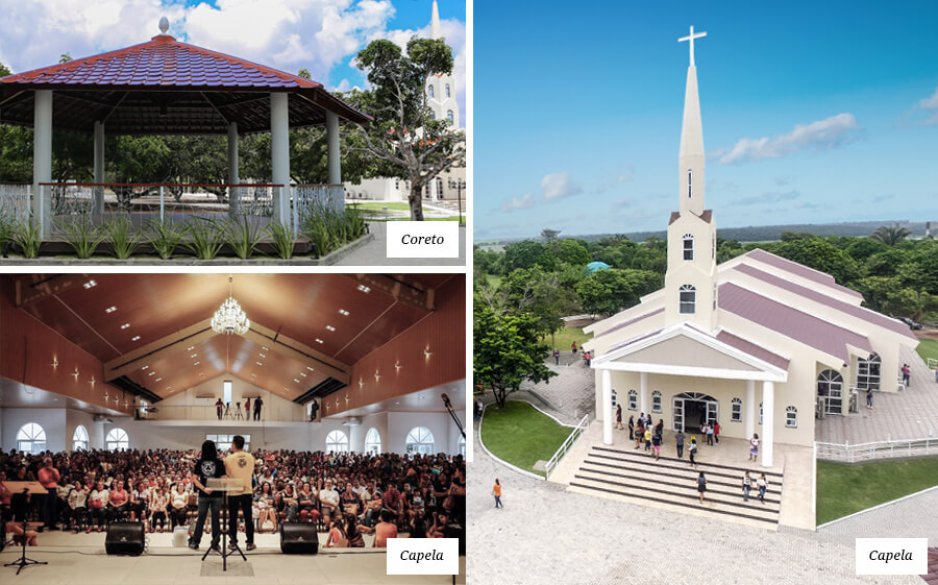

Nossa História
FATHER OF THE TURKS

O NOSSO COMEÇO
No ano de 2002, com a bênção da Primeira Igreja Batista de João Pessoa presidida pelo Reverendo Estevam Fernandes de Oliveira, foi fundada a Primeira Igreja Batista do Bessamar, na cidade de João Pessoa, capital da Paraíba, um dos Estados mais pobres do Brasil.
Em uma pequena capela de madeira, na beira-mar da praia do Bessa, tendo como seu primeiro líder o pastor Inaldo Camelo Vieira Filho, começou, em 05 de dezembro de 2002, a história de mais uma agência do Reino de Deus na face da Terra.
Logo depois, em julho de 2004, eu, Sérgio Queiroz, fui convidado para liderar aquela pequena e jovem igreja. Assim, junto com a minha esposa Samara Queiroz e com os nossos filhos, Sérgio Augusto, Esther e Débora, começamos uma nova etapa em nossas vidas. Passamos a viver intensamente um novo chamado, um novo desafio. Nenhum dos membros da comunidade, nem mesmo eu, poderia imaginar o que estava prestes a acontecer.
João Pessoa é uma cidade linda, uma das mais arborizadas do mundo, repleta de belezas naturais e de edificações inspiradoras. Terra de gente hospitaleira e um dos mais promissores destinos para aqueles que querem viver em uma cidade pacata e tranquila, sem abdicar das comodidades de um grande centro urbano. Entretanto, como qualquer outra cidade do Brasil, está marcada pela criminalidade, pela pobreza, pela violência, pela destruição familiar e pelo alto consumo de drogas.
Mas, o que a igreja de Jesus tem a ver com isso?
UM PROBLEMA INESPERADO
Em um dos meus primeiros atendimentos na “capela de madeira”, fui despertado para encarar um dos maiores males do nosso tempo: as drogas. Em um relato emocionado e pouco esperançoso, uma viúva compartilhou a dor de ver o seu filho morrendo lentamente em razão da pedra da morte: o crack!
Há dez anos, quando isso aconteceu, poucas eram as opções de tratamento disponíveis na Paraíba, e tal realidade nos inquietou. Precisávamos fazer algo para ajudar os dependentes químicos do nosso Estado, mas não sabíamos exatamente o quê.
Tomados por um desejo profundo de fazer alguma coisa, decidimos construir um Centro de Reabilitação para Dependentes Químicos, mas precisávamos de um terreno para isso. Francamente, a nossa intenção era encontrar algum lugar de um ou dois hectares, algo em torno de dez a vinte mil metros quadrados, o que seria mais que suficiente para o plano que guardávamos no coração de abençoar pessoas presas aos vícios.
Um certo dia, saindo de João Pessoa pela BR-101, avistei uma área à venda, às margens da rodovia. Seria aquele lugar? Pela visão que tive não era possível saber o seu exato tamanho.
Logo marcamos uma reunião com o corretor de imóveis no próprio terreno e ali fomos surpreendidos com duas desafiadoras informações: a área media aproximadamente 150 hectares, e o seu preço era totalmente inviável para a nossa realidade. Mas, algo pulsava mais forte no nosso coração: uma convicção vinda do próprio Deus de que aquela gigantesca área seria nossa. Mas, como? E se conseguíssemos comprar, o que faríamos com quase um milhão e quinhentos mil metros quadrados? Por que Deus estaria nos dando uma área tão grande?

O PROJETO CIDADE VIVA
Em reuniões contínuas com a liderança da igreja, chegamos à conclusão de que o Senhor da História desejava que fizéssemos algo além das nossas forças, além dos nossos sonhos e capacidades, além dos nossos recursos e experiências, além do que uma igreja normalmente faz, algo que só seria possível caso o próprio Deus fosse à nossa frente.
Surgiu então o plano inicial de construirmos uma cidade naquele lugar. Isso mesmo, uma cidade. Um lugar de refúgio, de esperança, de restauração, de comunhão e de inclusão. Uma cidade sem barreiras raciais ou sociais, um lugar especial onde ex-presidiários pudessem ser treinados e reinseridos na sociedade, onde crianças carentes pudessem ter uma educação de qualidade, onde idosos fossem acolhidos com amor e respeito, onde dependentes químicos encontrassem o caminho da restauração. Sem falar em áreas dedicadas ao esporte, à arte, à cultura, ao lazer, à tecnologia, à educação superior e ao desenvolvimento de soluções para os grandes males da humanidade. Um projeto de missão integral além da teoria.
Um lugar de praças e trilhas, de florestas e montes, de repouso e trabalho, de estudo e lazer. Um lugar de inspiração e de vida, uma linda propriedade cortada pelo maravilhoso Gramame, rio cujas águas abastecem boa parte da Grande João Pessoa. Lançamos, então, o Projeto Cidade Viva, no ano de 2004.

PRIMEIRA FASE, A PEREGRINAÇÃO
Após o lançamento público do projeto, os poucos membros e congregados da igreja abraçaram a desafiadora visão dada por Deus e, com muito esforço e generosidade, levantamos os primeiros recursos para o pagamento daquela imensa propriedade. Foram tempos difíceis e desafiadores, mas a poderosa mão de Jesus estava conosco. Em cerca de quatro anos, a Cidade Viva foi completamente paga. Um verdadeiro milagre!
O crescimento da comunidade foi explosivo a partir do lançamento do projeto. A ideia de vivermos juntos um cristianismo integral, voltado à restauração de todas as áreas da existência humana, por amor a Deus e ao próximo, serviu como mola propulsora para o nosso envolvimento com a cidade e com os nossos semelhantes.
Vários ministérios voltados à transformação social foram iniciados nesse período, e centenas de pessoas começaram a se render ao chamado de Jesus. Por essa razão, ainda nos últimos meses de 2004, mudamos as nossas celebrações dominicais para a quadra de uma grande escola da cidade. Começava ali a nossa peregrinação em direção à nossa Terra Prometida.
Entre 2004 e 2007, reunimos-nos em diversos lugares: clubes, salões de festa, quadras e até em um Shopping Center. Isso nos ajudou a entender que nós somos o templo do Deus Vivo, e não os prédios onde nos reunimos. Paralelamente e, mesmo sem termos um lugar fixo para as nossas reuniões e atividades, começamos as obras da Cidade Viva. Assim, com muitas dificuldades financeiras, iniciamos a construção dos seus primeiros equipamentos: Um moderno Centro de Reabilitação para Dependentes Químicos e a reforma de um antigo Casarão, que passou a servir como nosso Centro de Treinamento Ministerial.

SEGUNDA FASE, A CONSOLIDAÇÃO
Enquanto gastávamos os nossos limitados recursos com a construção dos primeiros equipamentos sociais da Cidade Viva, continuávamos sem um lugar fixo para as nossas atividades em João Pessoa. Mas, Deus estava preparando uma nova surpresa para nós.
Um empresário paraibano, sabendo das ações sociais que estávamos desenvolvendo, e confiando na idoneidade do nosso projeto, resolveu construir um imenso prédio para nos alugar. Um lugar formidável, perto do mar e da nossa antiga capela de madeira. Espaço que serviria como sede de todo o projeto até que fôssemos, pouco a pouco, edificando a nossa querida Cidade Viva.
Assim, em Dezembro de 2007, inauguramos o Centro de Convenções Cidade Viva. Prédio com um auditório para 1.500 pessoas, além de diversos outros espaços destinados ao desenvolvimento das nossas atividades. Começamos ali um tempo de consolidação das nossas ações na cidade.
Para melhor desenvolvermos a nossa missão, instituímos, em 2008, a Fundação Cidade Viva, braço social do Projeto Cidade Viva, que tem atuado em presídios, hospitais, abrigos de menores, escolas públicas, ruas, favelas e tantos outros lugares onde a dignidade humana precise ser afirmada ou restaurada. Nesse período, fechamos várias parcerias institucionais e vimos surgir dezenas de outras ações ministeriais.
A Fundação Cidade Viva é hoje reconhecida como instituição de utilidade pública municipal, estadual e federal, e atua em sete eixos:
- 1) Apoio à Família
- 2) Geração de Emprego e Renda
- 3) Ética, Direito e Cidadania
- 4) Educação, Esporte e Cultura
- 5) Saúde
- 6) Meio Ambiente
- 7) Promoção dos Valores Cristãos
Em 2010, iniciamos a Escola Internacional Cidade Viva, braço da Fundação Cidade Viva voltado à promoção de uma educação de alto nível e cuja missão é educar líderes que transformarão o mundo. Firmada sobre o tripé do Bilinguismo, do Tempo Integral e da Ética Cristã, a Escola Internacional Cidade Viva já se tornou referência nacional e possuiu parcerias com a University of Missouri, para prover, opcionalmente, o ensino médio americano; e com a Universidade de Cambridge, funcionando como entidade certificadora da língua inglesa.
Além disso, a escola possui um projeto nutricional premiado, que tem servido de modelo para várias outras instituições. Sem falar que cerca de trinta por cento do faturamento da escola tem sido convertido em bolsas parciais e integrais.
Entre 2008 e 2012, o Projeto Cidade Viva fortaleceu-se e ganhou notoriedade. Além do Campus Aeroclube, onde temos o Centro de Convenções e a Escola Internacional, fundamos o Campus Campina Grande, o Campus Zona Sul, O Núcleo de Atendimento Integral no Município do Conde e o nosso primeiro Campus rural, na cidade de Sapé.
Mas, nem tudo ia bem! O que seria?

TERCEIRA FASE, O ANO DA TRANSIÇÃO
No final de 2012, chegamos à conclusão de que a Fundação estava drenando as nossas forças, e a Igreja não estava recebendo a devida atenção. De tanto olharmos para a cidade e os seus problemas, tornamo-nos, muitas vezes, meros ativistas sociais. Precisávamos voltar ao primeiro amor. Não devíamos esquecer que a nossa relação com Deus e os nossos irmãos precisaria ser o forte fundamento de todas as nossas ações.
Em razão disso, começamos um processo sistemático de retorno aos objetivos estratégicos do projeto Cidade Viva e, para isso, buscamos o fortalecimento espiritual da igreja. Assim, decidimos que o ano de 2013 seria o ano da transição.
Naquele ano, realizamos várias séries de mensagens, e os efeitos delas já começavam a ser percebidos na comunidade. Começamos a investir mais intensamente na comunhão dos membros através de nossos grupos de conexão e, em meados de 2013, gravamos, no Centro de Convenções Cidade Viva, o nosso segundo álbum. Uma nova melodia começava a nos envolver.
Mas, 2013 também foi um ano de grandes lutas e provações, talvez o mais difícil da nossa história. Em alguns momentos, eu mesmo pensei em desistir de tudo!

QUARTA FASE, A GRANDE RETOMADA
Deus não desiste do seus planos. Após as grandes turbulências de 2013, olhamos para 2014 com uma esperança renovada, e, em uma reunião de planejamento, nos primeiros dias do novo ano, percebemos claramente que estávamos sendo negligentes com a nossa terra, com o lugar de onde tiramos o nome Cidade Viva. Que estávamos fazendo com aqueles milhares de metros quadrados?
Impulsionados por Deus, retomamos os objetivos iniciais do projeto e, logo no início de 2014, voltamos a investir na edificação da Cidade Viva, a grande propriedade que passamos a chamar de Campus Metropolitano, e também na edificação espiritual dos nossos membros e congregados.

Começamos, assim, uma celebração dominical e uma série de obras na nossa terra. Como parte dessa primeira fase, refizemos as cercas da propriedade, construímos a entrada principal e retomamos as obras para a finalização de todas as alas do Centro de Recuperação, que passou a ser chamado de Casa do Oleiro, pois não só atenderá dependentes químicos, mas servirá de lugar de restauração para muitas outras almas cansadas e sobrecarregadas.
O velho Casarão foi, mais uma vez, reformado e ganhou uma nova cozinha industrial e uma ampla área de banheiros, para melhor atender aos que lá estiverem.
Hoje temos uma linda capela, um coreto que serve para várias expressões culturais, uma praça onde caminhamos tranquilos e uma grande área de lazer e de esportes.
ETAPA 2 – FASES 1,2,3
Em breve, começaremos a segunda fase: será construído o Centro Metropolitano de Desenvolvimento Social, com vários espaços que serão destinados à promoção dos nossos objetivos institucionais e abençoará milhares de pessoas, especialmente as mais excluídas.

Também teremos uma grande praça de alimentação, que atenderá todo o Campus Metropolitano e será um lugar de encontros e boas conversas.
Em médio prazo, começaremos a terceira etapa, que consistirá da construção de um complexo educacional composto de uma escola e uma faculdade, além dos alojamentos e pousadas que servirão para receber os que desejarem passar alguns dias na Cidade Viva.

A quarta etapa contemplará o Centro Internacional de Convenções da Cidade Viva, um lugar capaz de abrigar eventos para mais de 10.000 mil pessoas.
Sabemos que a construção de todos esses projetos não será algo fácil, mas descansamos nas mãos soberanas do nosso Pai Eterno, o dono da Cidade Viva.
Pedimos a graça Dele para que nunca desistamos da nossa missão, que consiste em “conduzir pessoas a um relacionamento autêntico com Jesus Cristo, para que vivam com dignidade e sejam frutíferas no mundo”.
Sonhamos que o Campus Metropolitano da Cidade Viva torne-se um lugar de inspiração para pessoas de todo o mundo. Um lugar de convergência, de novas experiências, um celeiro de possibilidades, um laboratório para projetos de transformação do mundo, onde fé, arte, cultura, ciência, filosofia e tecnologia não sejam vistos como realidades conflitantes e onde o ser humano seja compreendido como uma integralidade indivisível que precisa ser restaurada por Cristo.
Afinal, segundo Abraham Kuyper, fundador da Universidade Livre de Amsterdã e ex-Primeiro Ministro da Holanda, cuja obra tem influenciado profundamente a Cidade Viva, não há um único centímetro quadrado, em todos os domínios de nossa existência, sobre os quais Cristo, que é soberano sobre tudo, não clame: ‘É meu!’
Desse modo, temos a visão de ser uma comunidade capaz de influenciar João Pessoa, a Paraíba, o Brasil e o mundo a viverem o cristianismo bíblico de maneira relevante em seus contextos sócio-culturais, para a glória de Deus e para a alegria da humanidade.
Isso nos move a continuar caminhando, sabendo que os obstáculos serão imensos, mas nunca maiores do que o Grande Doador de Sonhos.
Que venha a próxima década, pois estamos apenas começando!